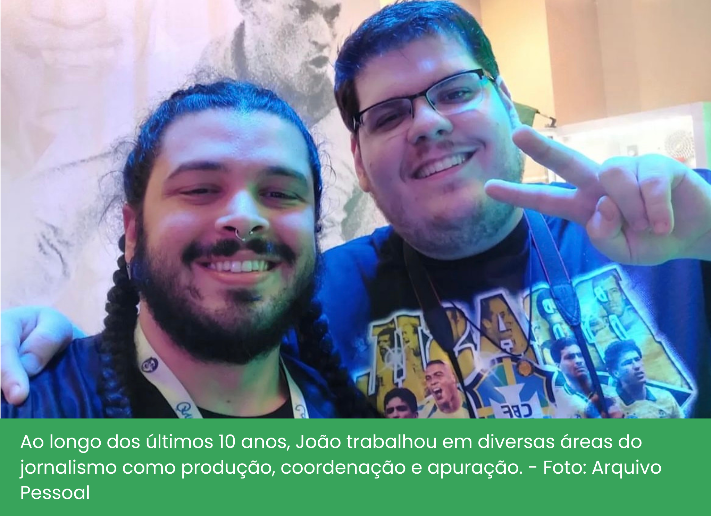

Nos bastidores da emoção: As vozes que levam os jogos de futebol até você
O maior canal de esportes do Brasil, segundo o Streams Charts, 6,9 milhões de espectadores simultâneos, mais de 12 milhões de inscritos no YouTube e Twitch. Estes são alguns recordes da Cazé TV, estrelada pelo maior streamer esportivo do mundo em 2022, Casimiro Miguel.
Dominando o pódio de lives mais assistidas do YouTube Brasil com seu jeito bem humorado e bordões que viralizam, o streamer reúne milhares de fãs com as suas transmissões que fogem do modelo tradicional. Desde vídeos reagindo a comidas inusitadas, quedas de moto, tour por mansões, e o seu principal foco: o futebol.
E o que antes eram simples reacts aos melhores momentos dos jogos, transmitidos por meio do seu perfil na Twitch, resultou na criação da Cazé TV, um canal secundário que se tornou pioneiro na cobertura de competições esportivas no Brasil. Mas como tudo isso começou?
A Parceria
“Juntos para revolucionar as transmissões esportivas”. Essa foi a frase utilizada por Casimiro e LiveMode ao firmarem acordo em janeiro de 2022. A partir desse momento, a empresa assumiu o papel de representante exclusiva do Casimiro para atividades comerciais, parcerias com marcas, integração em plataformas e criação de iniciativas personalizadas em seus espaços virtuais.
Gerenciadora de direitos esportivos, a empresa carioca foi responsável pela transmissão na Twitch do Casimiro de jogos do Campeonato Carioca 2022 e das partidas do Athletico Paranaense, como mandante, pelo Brasileirão, e juntos alcançaram um marco histórico na mídia esportiva: a transmissão da Copa do Mundo de 2022, por meio das plataformas digitais.
Ao todo, o acordo com a FIFA permitiu a transmissão de 22 jogos do mundial, incluindo todos os jogos do Brasil, as duas semifinais e a final.
Para comercializar, promover e produzir as transmissões, em novembro do mesmo ano, Casimiro e LiveMode oficializaram a criação de um novo canal no YouTube e na Twitch, a Cazé TV, uma concretização da popularidade das transmissões online nos últimos anos, devido ao avanço da tecnologia, e um grande passo para a mudança nos hábitos de consumo de conteúdos esportivos.
 Criada por Sérgio Lopes e Edgar Diniz, o objetivo da LiveMode é desenvolver abordagens inovadoras para a transmissão e a exploração de oportunidades comerciais no âmbito do esporte ao vivo. “Esse mundo digital ainda tem muito a ser explorado e a gente ainda não sabe exatamente como é formato final dele, ele pode ir se transformando ao longo do tempo, pois ainda há vários modelos surgindo e todos eles têm seu jeito diferente de transmitir esporte”, é como explica Sérgio Lopes, que anteriormente, em 2004, fundou também o Esporte Interativo, veículo de transmissões esportivas que depois de mais de uma década, foi comprado pela Turner (atual WarnerMedia).
Criada por Sérgio Lopes e Edgar Diniz, o objetivo da LiveMode é desenvolver abordagens inovadoras para a transmissão e a exploração de oportunidades comerciais no âmbito do esporte ao vivo. “Esse mundo digital ainda tem muito a ser explorado e a gente ainda não sabe exatamente como é formato final dele, ele pode ir se transformando ao longo do tempo, pois ainda há vários modelos surgindo e todos eles têm seu jeito diferente de transmitir esporte”, é como explica Sérgio Lopes, que anteriormente, em 2004, fundou também o Esporte Interativo, veículo de transmissões esportivas que depois de mais de uma década, foi comprado pela Turner (atual WarnerMedia).
Além de cofundador da empresa, Sérgio atua como Investidor em start-ups de mídia e tecnologia, gerenciamento de publicidades, marketing, imprensa e relacionamento com operadoras de TV paga e de conteúdos para a internet.
Com uma ampla experiência no âmbito esportivo, ele carrega consigo a construção de um formato completamente novo do futebol nas plataformas de live streaming e nos conta sobre sua experiência, estratégias e o crescimento dessa parceria de sucesso. “Usar o poder de influenciadores para contar a história de grandes eventos esportivos ao vivo era algo que sempre quisemos testar”, comenta.
O êxito nas transmissões da Copa do Mundo 2022 foi tamanho, que de lá pra cá, diversas oportunidades surgiram para transmitir não apenas futebol, mas outras modalidades de esporte também.
Entidades como a Federação Paulista de Futebol, FIFA, Liga Forte Futebol e o Comitê Olímpico Brasileiro firmaram parceria com a Cazé TV, e, até setembro de 2023, já foram transmitidos o Mundial de Clubes, Campeonato Carioca em parceria com o Vasco e Botafogo, o Brasileirão com os jogos do Athletico Paranaense em casa contra todos os grandes clubes brasileiros, a Copa do Mundo FIFA Sub20, a Copa do Mundo Feminina, Copa do Mundo FIFA Sub-17, Copa do Mundo FIFA de Beach Soccer, Copa do Mundo FIFA de Futsal, Jogos da Juventude, Bundesliga, Mundial de Ginástica Artística e, mais recentemente, os Jogos Pan-Americanos 2023.
E não foi apenas a quantidade de transmissões e público que cresceu, mas o número de colaboradores também. E o que antes era um canal estrelado apenas por Casimiro Miguel, passou a contar com um time gigantesco de comentaristas, analistas e narradores, com o intuito de promover uma experiência mais envolvente e interativa para os espectadores.
Belle Suarez, 31 anos, é torcedora declarada do Fluminense e atua como comentarista da FluTV. A carioca chegou para compor a seleção da Cazé TV durante a Copa do Mundo de 2022, sendo um reforço de peso nos comentários da Copa do Mundo Sub-20, Brasileirão, Copa do Mundo Feminina 2023 e Jogos Pan-Americanos 2023, mas nem sempre foi assim.
Formada em direito, Isabelle iniciou a vida profissional em um escritório de advocacia, mas sua paixão sempre foi o esporte, e para ficar mais próxima do que tanto amava, deixou o antigo trabalho para se aprimorar em outro escritório, mas dessa vez focado em direitos esportivos. Esse foi apenas o primeiro passo, pois desistir do que tanto sonhou não era uma opção, e após muitos cursos e especializações em cultura e esporte, Belle finalmente se realizou profissionalmente.
Em uma entrevista exclusiva, a tricolor compartilha um pouco da sua rotina, de toda a sua trajetória na gigantesca Cazé TV e comenta sobre os percalços enfrentados pelas mulheres no âmbito esportivo, uma luta regada de resistência e determinação.
.png)
Por trás dos bastidores
Um dos fatores que influenciam no boom da audiência da Cazé TV é a forma descontraída dos apresentadores, que utilizam do humor e da linguagem despojada como aliados para cativar o público, sem perder a qualidade da informação.
E esse entrosamento todo tem uma explicação. Grande parte da equipe são amigos de longa data, isso porque os fundadores da LiveMode também fundaram o falecido Esporte Interativo, canal no qual Casimiro iniciou sua carreira como estagiário, mas que teve seu fim anunciado em 2018, seguido de uma série de demissões em massa.
Dentre os quase 200 demitidos, está o jornalista João Marcos Sipi, que hoje atua como coordenador de transmissões ao vivo na Cazé TV e LiveMode. Tendo participado de grandes produções como a Copa do Mundo 2022, Campeonato Paulista no Youtube e Copa do Nordeste no YouTube e TikTok.
Formado pela PUC-Rio, o sonho do jornalista de 31 anos sempre foi trabalhar com esporte e entretenimento, mas a jornada até lá foi longa. Passando por assessoria de imprensa voltada para gastronomia, TV PUC, Rádio Cidade, voltada para os fãs de Rock, e na Band Rio, onde trabalhou com hard news e chegava às 5h da manhã para apurar casos de crime, realizando ligações para batalhões de polícia, bombeiros, IML, uma realidade bem distante da área de atuação que ele sempre almejou, até que ah, finalmente os refrescos! E em 2015 ele começou sua trajetória no Esporte Interativo, e por fim, chegou à LiveMode.
Confira o depoimento do coordenador de transmissões, no qual relata toda a sua história, as curiosidades dos bastidores e como o novo modelo de transmissão vem afetando o consumo de jogos ao vivo.
.png)